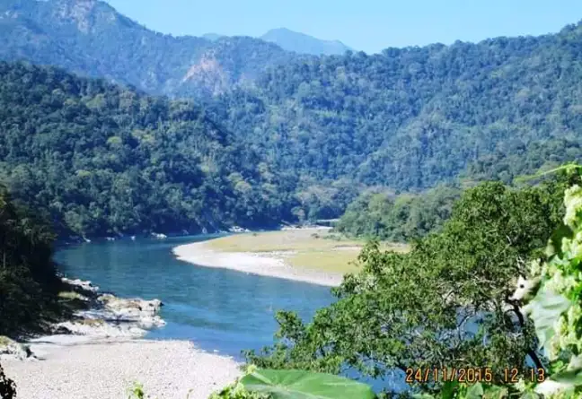
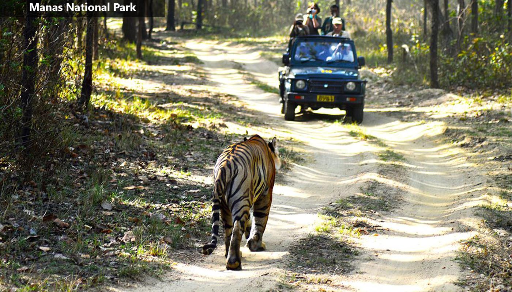
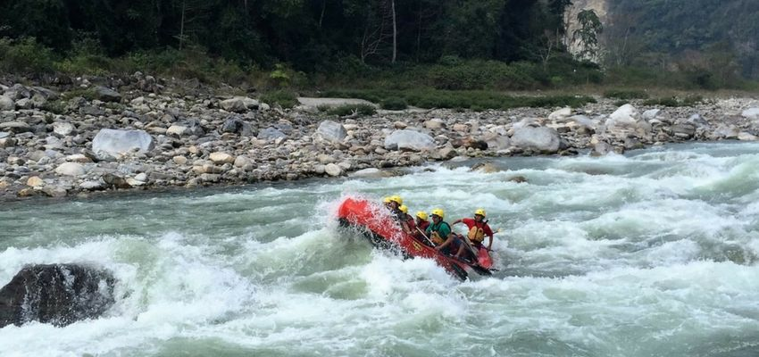
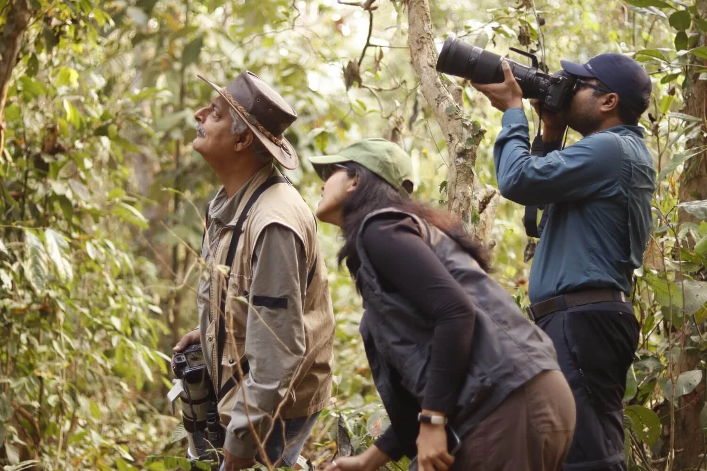

The Untamed Wetlands & Bhutan Frontier Borderlands
Spanning the fertile, flood-prone plains of the Brahmaputra River valley and stretching up into the rugged Himalayan foothills bordering Bhutan, Kaziranga National Park and Manas National Park are UNESCO World Heritage fortresses. Kaziranga is a vast landscape of towering elephant grass and deep marshland silt, protecting the world's largest population of the prehistoric Great Indian One-Horned Rhinoceros. Manas complements this with dense semi-evergreen forests and wild river systems acting as a vital sanctuary for tigers, wild water buffaloes, and rare pygmy hogs.
This wilderness carries an intensely raw, heavy, and primeval tracker energy. Early mornings break with dense, low-hanging river mists rolling off the Brahmaputra, blanketing the fields in deep shadow while wild elephants step through the tall brush. It is a world governed entirely by natural survival cycles—where the quiet whistle of riverine birds is suddenly shattered by the deep alarm snort of a cornered rhinoceros or the heavy splash of a tiger crossing a forest stream.

Penetrate deep into Kaziranga's central and western wetland territories in a high-clearance open 4x4 vehicle. Navigate dense marsh trails to track the Great Indian One-Horned Rhinoceros.

Command off-road vehicles through the dense, heavy jungle corridors of Manas's core Bansbari sector. Track apex Bengal tigers moving along the wilderness borderlands shared with Bhutan.

Paddle down the icy, crystal-clear currents of the Manas River breaking out of the Bhutan hills. Float past sheer rock cliffs, tracking wild water buffaloes and herds of elephants drinking along the shores.

Strap on tactical boots for an intensive foot trek through the unpaved forest paths of the Panbari Reserve buffer zone. Scan the high canopies to track rare hornbills and wild hoolock gibbons.